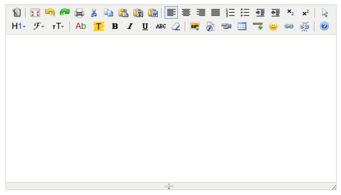

富文本编辑器默认使用的是kindeditor（点击查看官网API）， KindEditor 是一套开源的在线HTML编辑器，主要用于让用户在网站上获得所见即所得编辑效果， 开发人员可以用 KindEditor 把传统的多行文本输入框(textarea)替换为可视化的富文本输入框，主要特点有： · 快速：体积小，加载速度快 · 开源：开放源代码，高水平，高品质 · 底层：内置自定义 DOM 类库，精确操作 DOM · 扩展：基于插件的设计，所有功能都是插件，可根据需求增减功能 · 风格：修改编辑器风格非常容易，只需修改一个 CSS 文件 · 兼容：支持大部分主流浏览器，比如 IE、Firefox、Safari、Chrome、Opera
在需要显示编辑器的位置添加textarea输入框：
然后添加以下javascript脚本：
富文本编辑器默认风格，如下图所示：
更多更详细的API 建议大家去官网阅读，这里就不再搬运了， http://kindeditor.net/doc.php